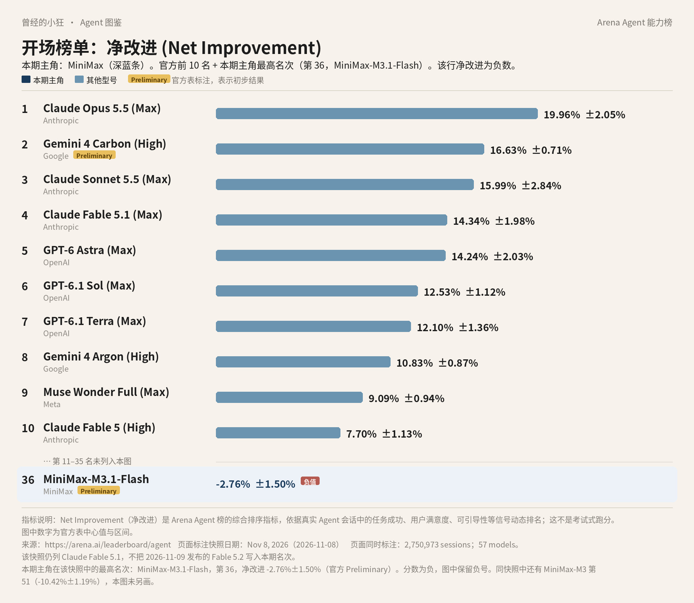
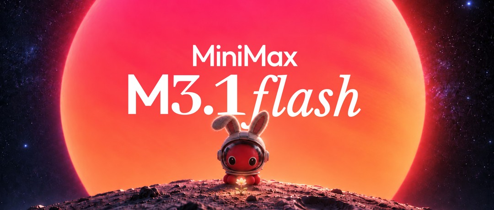
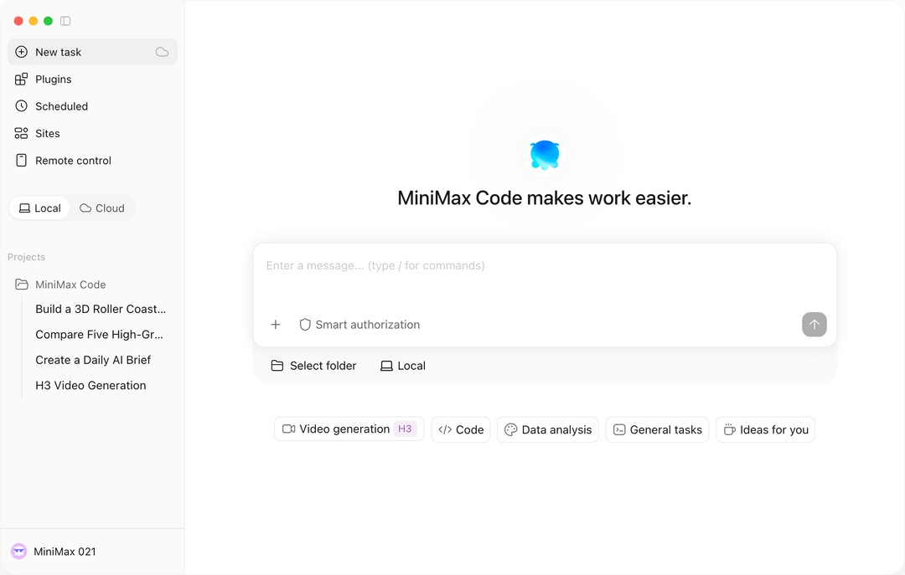
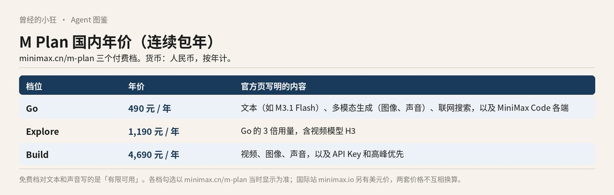

曾经的小狂 · Agent 图鉴 第 11 篇
先说一个不太好听的数字。在 2026 年 11 月 8 日这份 Arena Agent 综合榜快照里，MiniMax 最高的一行，净改进是负数。

全球 Agent 前十，并在表下加出第 36 名 MiniMax-M3.1-Flash（Arena Agent 榜 · 净改进，2026 年 11 月 8 日快照）。该行净改进为 −2.76%±1.50%，官方标 Preliminary。数据来源：arena.ai/leaderboard/agent。Fable 5.2 未进入本期快照。
这张图和全系列其他篇是同一份数据：Arena 的 Agent 综合榜，指标叫「净改进」，看的是真实会话里，一个助手把事情做完之后，综合表现到底好了多少。一共记了 2,750,973 场会话、57 个模型。数据来自 arena.ai/leaderboard/agent。第 2 名 Gemini 4 Carbon (High) 带官方 Preliminary 标注，表示初步结果。Claude Fable 5.2 是快照第二天才发布的，没有进这期名次。
前十里没有 MiniMax。因为不在前十，图在表下另加了一行，写的是真实名次，不是编出来的座位：第 36 名 MiniMax-M3.1-Flash，净改进 −2.76%±1.50%。请把前面那个减号看清楚。它不是一个很小的正数，而是低于这条榜用来比较的基线。官方还标了 Preliminary，表示初步结果。表里没有「海螺」两个字，厂商栏写的是 MiniMax。
同一份快照里还有第 51 名 MiniMax-M3，净改进 −10.42%±1.19%。这一行没有画进开场图。
官方页在百分数后面给出的 ±，是 95% 置信区间。就 MiniMax-M3.1-Flash 这一行来说，中心值是 −2.76%，把区间算进去，上沿仍在零以下。它还带官方 Preliminary 标注，会话数是 13,089，比同表里许多行要少。第 51 名 MiniMax-M3 的会话数是 44,355。这些都是读这两行时可以一并看见的事实，不必额外发挥。
负的净改进，只是这份快照里的这个指标。它不是道德判决，也不是「不能用」的资格审查。下面仍按产品来讲：这家公司现在把入口放在哪里，文本、视频和图像各叫什么名字，国内和国际各怎么标价。
出品方是 MiniMax。国内站是 minimax.cn，国际站是 minimax.io。消费和开发入口包括 M Plan、MiniMax Code，以及开放平台 API。
人在中国大陆，消费入口走 minimax.cn，开发者价目走 platform.minimax.cn；国际站点覆盖的市场，走 minimax.io 和 platform.minimax.io。两套账户不要混用，两套价格也不要互相换算。两边价目各按原币种标价。
很多人是先记住「海螺」或 Hailuo 这个名字的，尤其是在视频和图像这一侧。历史模型 Hailuo 2.3、2.3Fast、02 现在仍作为 legacy 出现。当前旗舰视频模型，官方名已经是 MiniMax-H3。介绍页写它支持文生、图生、首尾帧和多模态参考，分辨率有 768P 和 2K，时长 4 到 15 秒，每秒 24 帧。另有 H3-Highspeed、H3-Lite、H3-Max、H3-Regeneration。图像这边，是 MiniMax-H3-Image，以及 Highspeed。语音有 speech-2.8-hd、turbo 等。音乐付费 API 从 2026 年 8 月 20 日起，不再对新增用户开放。
H3 这一侧，官方写的能力可以先说成几句人话。文生，是从文字生成视频；图生，是从图片生成；首尾帧，是你先给定开头和结尾的画面，再让它补中间；多模态参考，是同时拿多种材料作参照。分辨率和时长不是可以随意拉长的，介绍页写的就是 768P 或 2K，4 到 15 秒，每秒 24 帧。
文本这一侧，当前主推的是 MiniMax-M3.1-Flash。平台模型页把它写成：前沿多模态编程模型，有 1M 上下文，思考深度可调。1M 上下文，可以先理解成一次能「看进去」的内容可以非常长；思考深度可调，就是这次要它想得深一点还是快一点，可以改。它和视频模型 H3 不是同一条产品线，只是同属于 MiniMax 现在对外提供的能力。MiniMax-M3 仍列在模型介绍里，国内价目还有 M3 的标准档和优先档。
还有两个容易混在一起的词。公司博客里的 Computer Use，说的是模型去操作电脑界面。M Plan 功能表里的远程控制、内置浏览器、SSH，说的是 MiniMax Code 这套应用按套餐提供的能力。名字相近，并不等于每一档订阅都自动包含博客里提到的全部 Computer Use 场景。仍以套餐对比表为准。
2026 年 10 月 19 日的公司博客，把 M3.1 Flash 定位为下一代 Flash 模型，并称在 Agent 任务、编码、Computer Use 和网络安全上有「代际」提升；还称在线推理速度约提升至近三倍，使用成本降低 70%。这些都是相对其前代的公司主张。Computer Use，指的是让模型去操作电脑界面，而不只是在对话框里回答。

MiniMax M3.1 Flash 官方博客题图。图片来源：minimax.io/blog/minimax-m31f
同一篇博客还写，更推智力上限的 Pro「稍后也会到来」。是否已经发布，官方页面没有写明，不能当作已经上线。
所以现在对外主推的文本旗舰，仍是 M3.1 Flash；还没在官方页确认上线的 Pro，不算进当前产品菜单。M3 还在价目和模型介绍里，但它不是当前主推的型号。视频和图像若仍按「海螺 2.3」去找，会找到 legacy，当前旗舰名是 MiniMax-H3 和 MiniMax-H3-Image。
普通人可以订阅 M Plan。官方把它写成面向个人的订阅：统一提供文本（例如 M3.1 Flash），以及图像、视频、语音等能力，具体看套餐；并且包含官方 Agent 应用 MiniMax Code。MiniMax Code 有网页、桌面、TUI，也有 iOS 和 Android。登录即可用，不必另配 API Key。下载页是 agent.minimax.io/download。也可以走网页和移动端，不一定先装桌面客户端。

MiniMax Code 下载页官方分享图：桌面端界面。图片来源：agent.minimax.io/download
功能表里出现过：定时任务、网站部署、项目、技能、精选插件、联网搜索、远程控制、内置浏览器、SSH、记忆、工作助理、自定义 Agent。各档勾选并不相同。不要默认每一档都有视频，也不要默认每一档都给 API Key。
开发者走开放平台，按量调用。国内是 platform.minimax.cn，国际是 platform.minimax.io。Build 档还会提供 API Key，官方写可接入 Claude Code、Codex、Workbuddy、Cursor、OpenCode 等。
选路时可以先问自己两件事。你是要在官方应用里让 Agent 写代码、跑任务，还是要在自己的程序里按量调用？前者走 M Plan 和 MiniMax Code，登录即可，不必先配密钥；后者走开放平台。你需要的是文本，还是连视频、图像、声音一起要？不是每一档都把这些能力打包进来，对比表要看对应站点上的勾选，不要用其中一档的能力去推断所有档。
国内站和国际站是两套定价，一套用人民币，一套用美元。不要把人民币价直接换成美元，也不要用国内年价去推国际月价。
国内开放平台（platform.minimax.cn/docs/pricing/overview）里，MiniMax-M3.1-Flash 是：输入 1.00 元 / 百万 tokens，输出 4.00 元，缓存读取 0.10 元。token 是计费和容量的单位，可以先把它理解成「用了多少文字量」。MiniMax-M3 另有不超过 512k、超过 512k，以及「永久五折」后的标准价，还有 1.5 倍的优先档，具体数字以价目页为准。视频 H3 按分辨率和秒计价，例如 MiniMax-H3 输出 2K 为每秒 0.80 元，768P 为每秒 0.50 元；输入视频，以及超出免费张数的图片，另计。服务端 web_search 是每次 0.03 元。
国际 API 按 M3.1 Flash 博客与国际定价概述：每百万 tokens 是 0.15 美元输入、0.60 美元输出、0.015 美元缓存输入。
国内 M Plan 页（minimax.cn/m-plan）上，连续包年写了「立省 2 月」。Go 现价是每年 490 元，划线价 588 元，含文本如 M3.1 Flash、多模态生成（图像、声音）、联网搜索，以及 MiniMax Code 各端。页上对 Go 的描述，没有把视频列为该项核心；对比表里视频模型 H3 的勾选，以页面为准。Build 是每年 4,690 元，划线价 5,628 元，含视频、图像、声音，以及 API Key 和高峰优先。Explore 是每年 1,190 元（连续包年），用量是 Go 的 3 倍，并含视频模型 H3。页上还出现「购买积分」，示例是 30 元对应 4,489 积分，规则以页内说明为准。免费档对文本和声音写的是「有限可用」。

自制信息图：M Plan 国内三档年价（连续包年）。数据来自 minimax.cn/m-plan。
国际 M Plan（minimax.io/m-plan）里，Go 是每年 220 美元，划线价 264 美元。Explore 和 Build 的完整美元月价，以国际页为准。
公司博客在谈 Agent、编码、Computer Use、网络安全时，附带过一组分数，例如 OSWorld V2 61.7、ALE 29.6、DeepSWE v1.1 73.7%、CyberGym 82%。必须把它们读成「MiniMax 称」或「公司博客」，并记住板名。其中「在中国模型中排名第一」，是公司对 OSWorld V2 与 ALE 的表述，不要升格成总榜第一。
官方还称，日常输出可达每秒 200 多个 token，P50 在每秒 170 个以上。这也是公司自己的说法。
M Plan 和 MiniMax Code 里，按套餐还可能有内置浏览器、远程控制、定时任务、自定义 Agent、SSH 等。博客曾写模型权重「稍后发布」；是否已经放出，以当时的开源页面为准，目前不能当作已经放出。
公司博客里的 OSWorld V2、ALE、DeepSWE、CyberGym，和 Arena 这份综合榜，不是同一套考法，也不能互相替代。博客分数要连「MiniMax 称」、板名一起读；Arena 上的负数，也只对这份快照里的净改进负责。两套数字都不必读成「所以很好」或「所以不能用」。
还有几件不要想当然的事。国内站和国际站的账户、定价、合规可能不同，不要混用。中国大陆用户可走 minimax.cn，国际用户走 minimax.io；实名、发票、支付限制以各站条款为准。音乐 API 已经对新增用户关闭。把 Arena 第 36 名的负数读成「不能买」，或读成「其实已经很好，只差一点点」，都不准确。它就是这份快照里的净改进。产品会改价、改默认模型和改套餐勾选，开通或调用前，再打开对应站点的价目页看一眼。
来源清单：
https://arena.ai/leaderboard/agent
https://arena.ai/blog/agent-arena-methodology
https://www.minimax.io/blog/minimax-m31f
https://platform.minimax.io/docs/guides/models-intro
https://platform.minimax.cn/docs/pricing/overview
https://platform.minimax.io/docs/pricing/overview
https://www.minimax.cn/m-plan
https://www.minimax.io/m-plan
https://agent.minimax.io/download
https://www.minimax.cn/